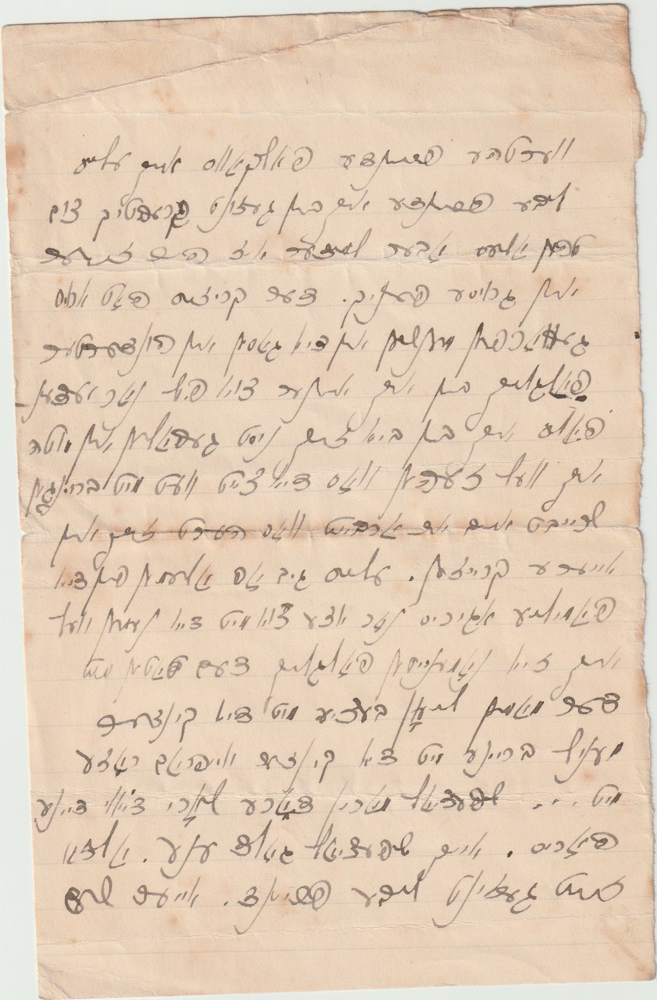
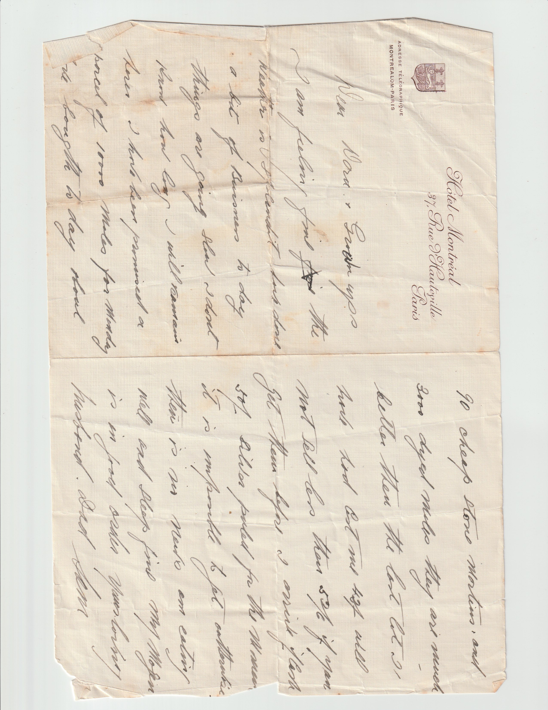

Stories From the Letters
The moments that turned a box of paper into a narrative.

Sam's letter to Dora, Montreal, 11 June 1901.
Turned away for being a Jew — so he lied about it.
Sam had only just arrived in Montreal, taking whatever labouring work he could find, when an employer turned him down flat: the job "wouldn't take any Jews." His solution, in his own words: "So I said I was an Austrian Christian — and they took me."
It's one of the earliest letters in the whole archive, and it doesn't stop there. Once he actually saw the contract they wanted him to sign, Sam realized the terms themselves were exploitative — and walked away from the job anyway, on his own judgment, regardless of what it had taken to get it.

Sam writing to friends the Falkovs and Alice, Montreal, 1907.
A documented financial crisis, landing on one family directly.
The Panic of 1907 was a real, historically documented financial crisis — and Sam's own letters show it happening to him personally, not as background: "The crisis has thrown people out of work by the hundreds, and I am one of them."
What follows in the letters isn't abstract hardship — it's Sam seriously weighing whether to try Chicago, a Canadian homestead grant, or Winnipeg, before finally deciding to give up on Canada and return to London for good. He was so broke by then that Dora, still his fiancée, had to send him the money for his own return ticket.

Sam's letter home, London, 3 September 1916, on his own fur-dealer letterhead.
A Zeppelin shot down over the city, mentioned in passing.
By September 1916, Sam is established enough to be writing home on his own fur-dealer letterhead. In the middle of an otherwise ordinary letter, he mentions watching the Cuffley Zeppelin — a real German airship shot down over London, a genuine wartime event — go down: "No doubt you have heard we brought down a Zeppelin. It was a fine sight."
Then he goes straight back to ordinary business news in the same paragraph, asking after the kids at the seaside. World-historical events and the most routine domestic questions sit side by side, in the same breath, on the same page.

Sam writing from the Hôtel Montréal, Paris, on a fur-buying trip.
Ninety stone martens, three thousand dyed moles — one day's purchase.
By the 1920s, the man who'd been turned away from a Montreal labouring job for being Jewish was running a fur-trade business substantial enough to buy pelts by the thousand on regular trips to the Continent: "I bought today about 90 cheap stone martens and 3,000 dyed moles; they are much better than the last lot I had."
It's a completely ordinary line in the letter — buried between family news and travel logistics, exactly like every other business update he sent home. The scale only becomes visible when you read it against where he started.